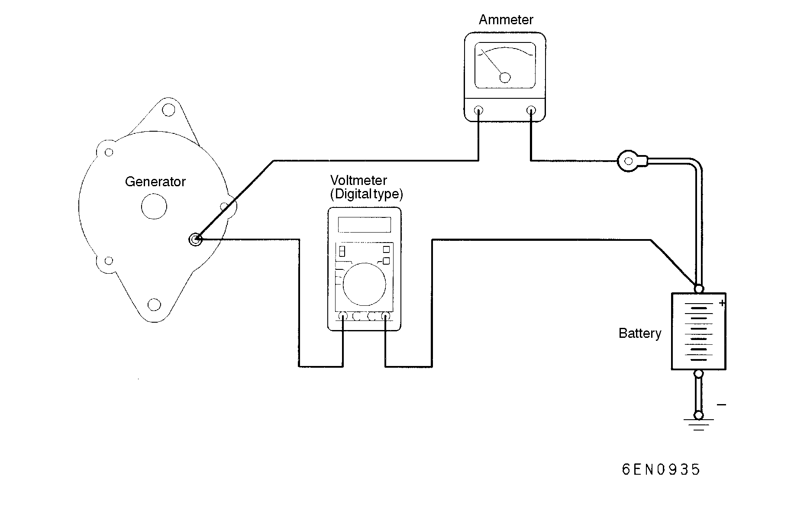

![[Previous]](https://mitsubishitechinfo.com/data/F24S/BUTTONS/fprevg.png)
![[Next]](https://mitsubishitechinfo.com/data/F24S/BUTTONS/fnextg.png)
ON-VEHICLE SERVICE
GENERATOR OUTPUT LINE VOLTAGE DROP TEST

This test determines the condition of the wiring from the generator "B" terminal to the battery (+) terminal (including the fusible link).
(1)Be sure to check the following before testing:
•Generator installation and wiring connections
•Generator drive belt tension (Refer to GROUP 00 - Maintenance Service.)
•Fusible link
•Abnormal noise from the generator while the engine is running
(2)Turn the ignition switch to the OFF position.
(3)Disconnect the negative battery cable.
(4)Disconnect the generator output wire from the generator "B" terminal. Connect a DC test ammeter with a range of 0 - 100 A in series between the "B" terminal and the disconnected output wire. (Connect the (+) lead of the ammeter to the "B" terminal. Connect the (-) lead of the ammeter to the disconnected output wire.)
NOTE
An inductive-type ammeter which enables measurements to be taken without disconnecting the generator output wire is recommended.
Using this equipment will lessen the possibility of a voltage drop caused by a loose "B" terminal connection.
(5)Connect a digital-type voltmeter between the generator "B" terminal and the battery (+) terminal. (Connect the (+) lead of the voltmeter to the "B" terminal. Connect the (-) lead of the voltmeter to the battery (+) cable.)
(6)Connect a tachometer. (For the procedure for connecting the tachometer, refer to GROUP 11A <2.0L Engine> - On-vehicle Service. refer to GROUP 11E <2.4L Engine> - On-vehicle Service).
(7)Reconnect the negative battery cable.
(8)Leave the hood open and connect a tachometer.
(9)Start the engine.
(10)With the engine running at approx. 2500 r/min, turn the headlights and other lights on and off to adjust the generator load on the ammeter slightly above 30 A.
Decrease the engine speed gradually until the value displayed on the ammeter is 30 A. Take a reading of the value displayed on the voltmeter at this time.
Limit: max. 0.3 V
NOTE
When the generator output is high and the value displayed on the ammeter does not decrease until 30A, set the value to 40A. Read the value displayed on the voltmeter.
In this case the limit becomes max. 0.4V.
(11)If the value displayed on the voltmeter is still above the limit, a malfunction in the generator output wire may exist. Check the wiring between the generator "B" terminal and the battery (+) terminal (including fusible link).
If a terminal is not sufficiently tight or if the harness has become discolored due to overheating, repair, then test again.
(12)After the test, run the engine at idle.
(13)Turn off all lights and turn the ignition switch to the OFF position.
(14)Disconnect the negative battery cable.
(15)Disconnect the ammeter, voltmeter and tachometer.
(16)Connect the generator output wire to the generator "B" terminal.
(17)Connect the negative battery cable.